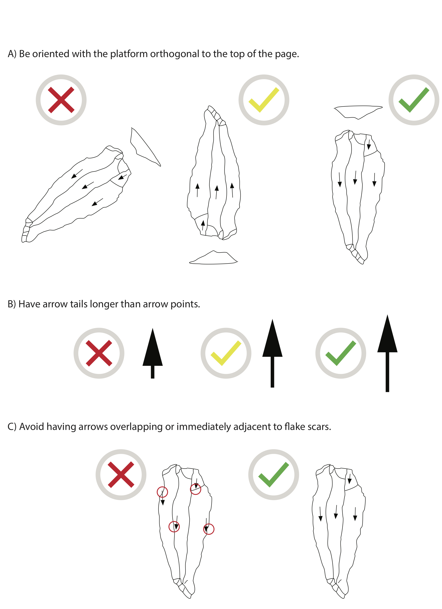
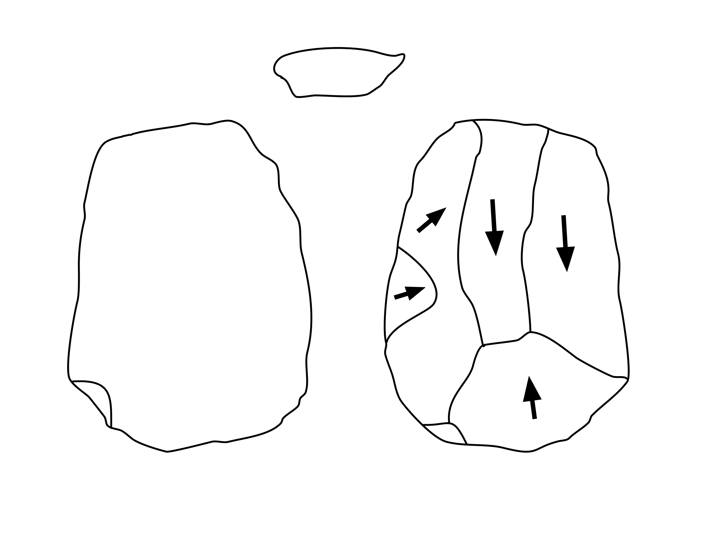
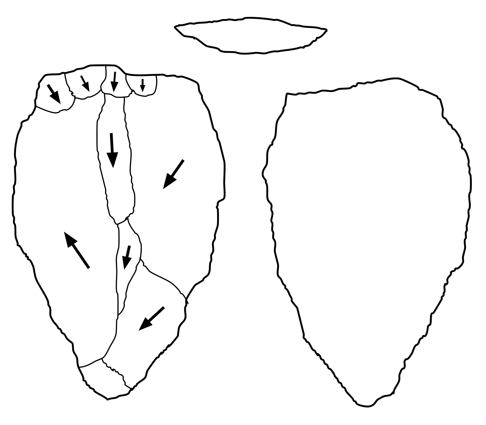
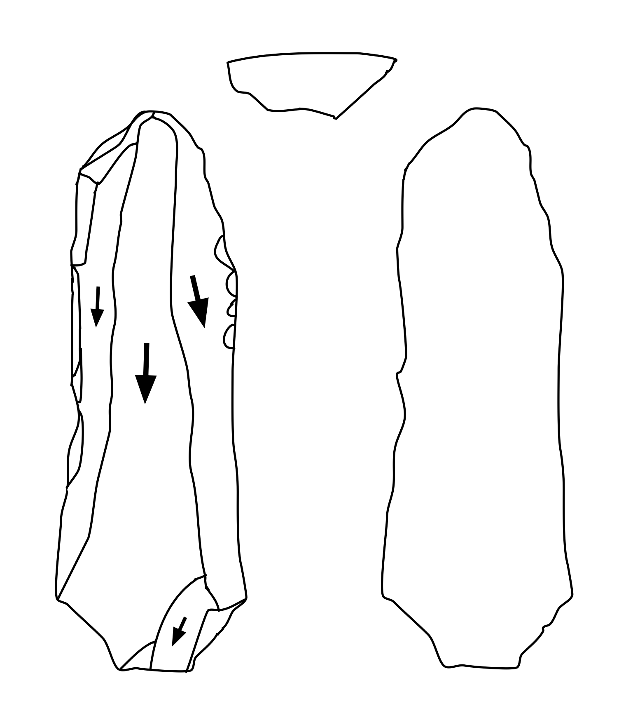
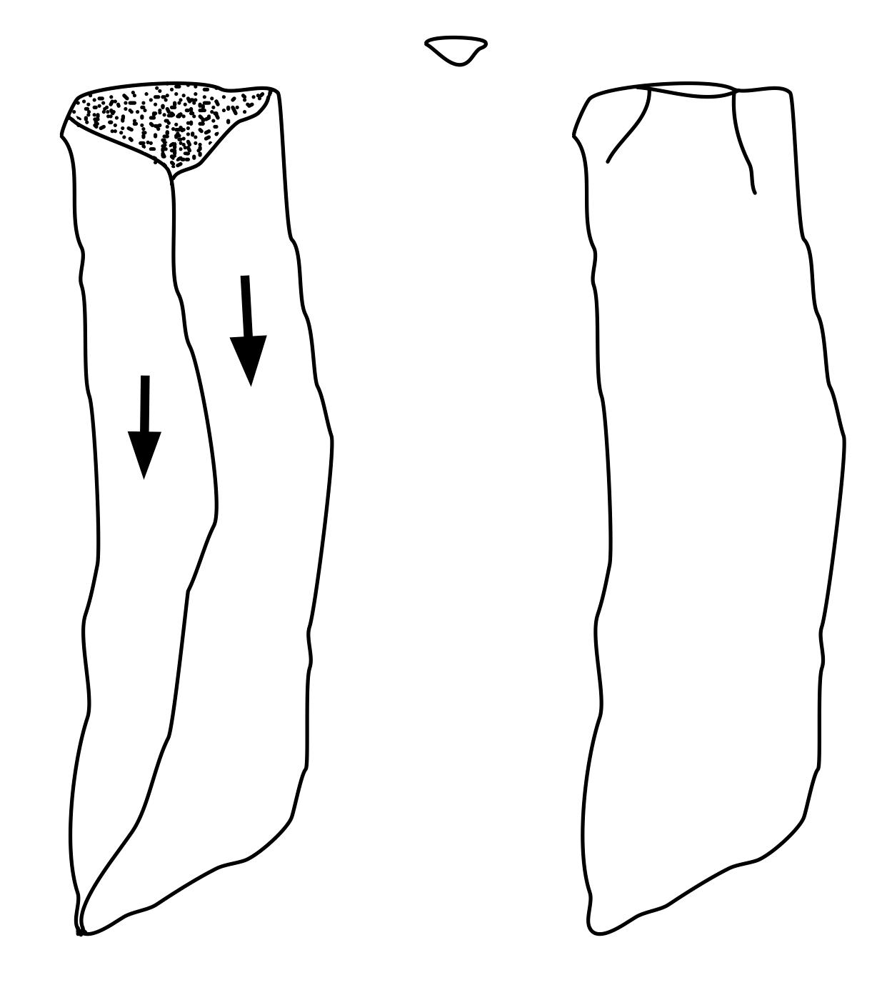
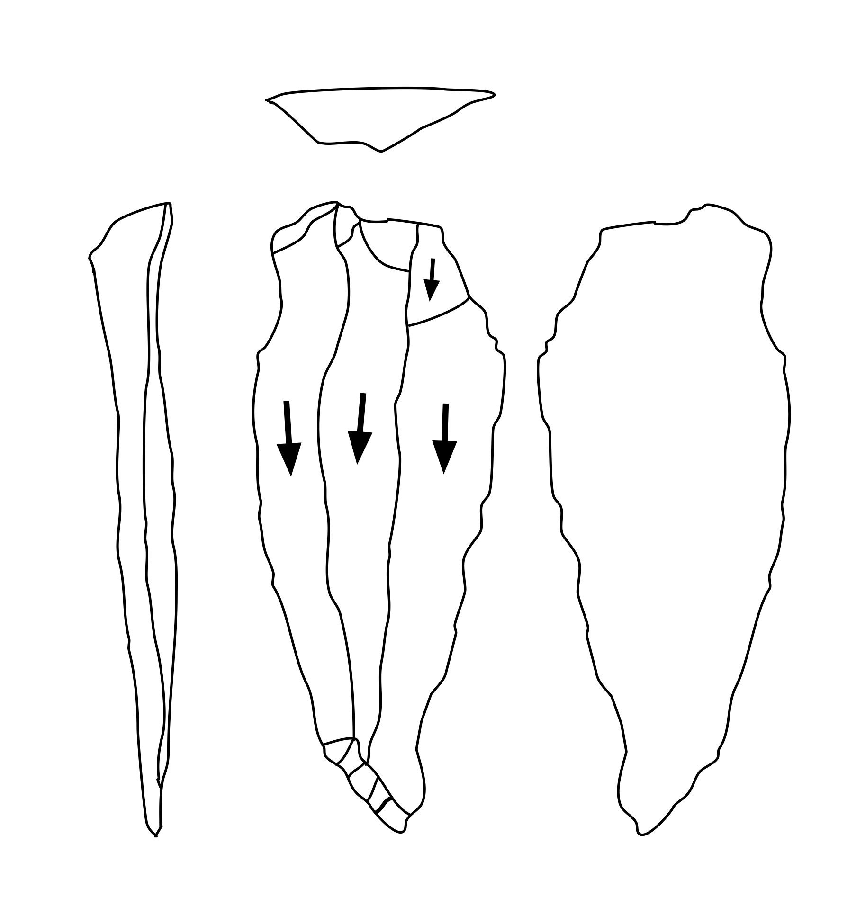
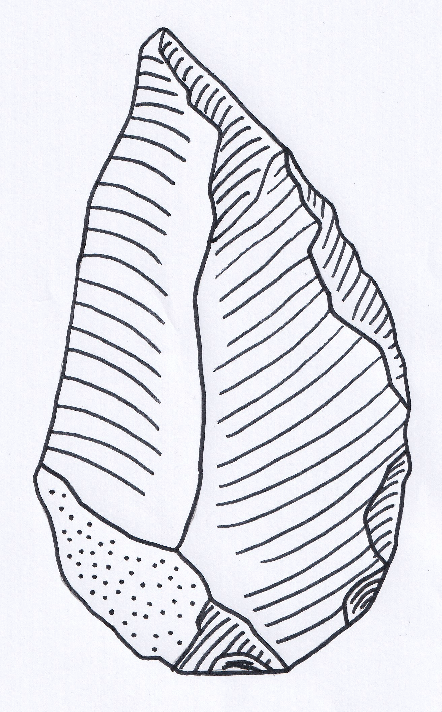
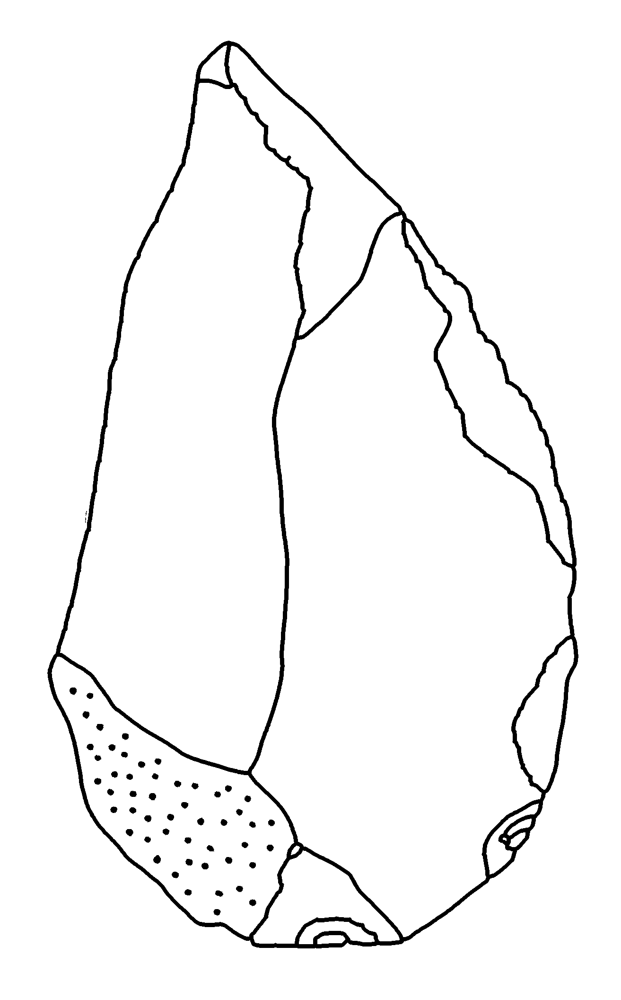
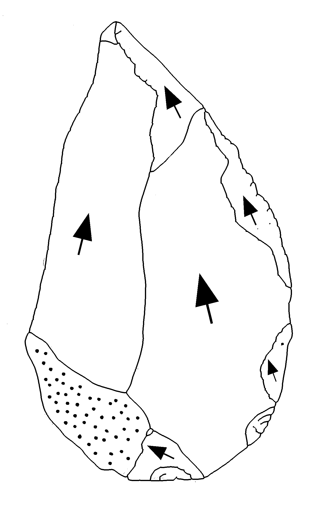

Image Requirements¶
Overview¶
PyLithics works with scanned illustrations of 2D lithic artifacts commonly found in archaeological publications. Understanding the image requirements and drawing conventions will help you achieve the best results.
Supported File Formats¶
Accepted Formats¶
- PNG (recommended): Lossless compression, best for line drawings
- JPG/JPEG: Widely supported, though compression may affect quality
- TIFF: High quality, larger file sizes
Resolution Requirements¶
- Optimal: 300 DPI (dots per inch) for best balance of quality and processing speed
- Supported Range: PyLithics has been tested between 75 DPI (minimum) to 600 DPI (maximum)
- High Resolution: 600+ DPI works well for archaeological line drawings with default settings
- Recommended: 300-600 DPI for archaeological illustrations
DPI Processing Intelligence
PyLithics automatically reads DPI information from your image files. For archaeological line drawings, the default fixed preprocessing kernels work optimally across all DPI ranges (75-600 DPI). DPI-aware scaling is available but typically not needed for clean line art - it's designed for noisy photographs or heavily degraded scans.
DPI Processing Modes¶
Default Mode (Recommended for Archaeological Drawings)
- Uses fixed kernel sizes optimized for line drawings
- Works consistently across 75-600 DPI range
- Preserves fine scar details at high resolution
- No DPI scaling applied
DPI-Aware Mode (For Noisy Images)
- Enable with
--enable_dpi_scalingflag - Scales preprocessing kernels based on image DPI
- Useful for degraded scans, or noisy images
- Three scaling strategies: conservative, standard, aggressive
Drawing Style Guidelines¶
Optimal Drawing Characteristics¶
PyLithics performs best with:
- Clean line drawings: Black lines on white background
- Clear contrast: Strong black/white separation
- Minimal artifacts: No scanning artifacts or shadows
- Complete outlines: Closed contours for surfaces
Supported Illustration Conventions¶
Currently, PyLithics is optimized to work with flakes.
Surface Representations¶
- Dorsal surface: Primary view with scar patterns
- Ventral surface: Smooth surface view (if present)
- Platform: Striking platform view (if present)
- Lateral edges: Side profile views (if present)
Internal Details¶
- Flake scars: Clear outline definition
- Cortex areas: Stippling or distinct shading patterns
- Arrows: Direction indicators for flaking
- Ripple marks: Concentric lines showing force propagation
Orientation Requirements¶
Standard Archaeological Convention¶
PyLithics is designed to work with lithic illustrations that follow established archaeological drawing conventions. Lithic illustrators have standardized systems of artifact orientation and proportions that are essential for accurate analysis.
Key orientation principles:
- Vertical Axis: Perpendicular (orthogonal) to the striking platform
- Scale: Lithics are normally drawn at 1:1 scale
- Primary View: Usually the dorsal surface is the principal view
- Multiple Views: Adjacent surfaces illustrated at 90-degree rotations from the principal view
- Consistent Orientation: All views maintain the same relative positioning
Critical for Accuracy
The vertical axis must be orthogonal to the striking platform. This standardization is crucial for accurate measurements, surface classification, and comparative analysis.
Visual Example¶
For best performance and accurate measurement, images loaded into PyLithics should:

Example of optimal drawing style and orientation for PyLithics analysis
Common Issues to Avoid¶
❌ Poor Quality:
- Blurry or low-resolution scans
- Gray or faded lines
- Incomplete contours
- Mixed drawing styles
✅ Good Quality:
- Sharp, clear lines
- High contrast
- Complete outlines
- Consistent style
Example Images¶
PyLithics comes with five sample images for you to experiment with. These images have the following characteristics that work best for PyLithics:
- Clean black lines on white background
- Closed contours for all surfaces
- Clear scar definitions
- Consistent line thickness
- Arrows for flaking direction (optional)
    
What about ripples?¶
The Challenge with Ripple Marks¶
While ripple marks (concentric curved lines) are a traditional way to indicate flaking direction in archaeological illustrations, they present challenges for PyLithics' computer vision algorithms:
Issues with ripples:
- Detection difficulty: Ripple marks can be mistaken for scar boundaries or surface features
- Inconsistent representation: Different illustrators draw ripples with varying styles and densities
- Ambiguous direction: Multiple concentric lines can create uncertainty about the exact force direction
- Processing interference: Ripples can interfere with accurate contour detection and surface classification
Why arrows work better:
- Clear directionality: Arrows provide unambiguous force direction indication
- Consistent detection: PyLithics is specifically optimized for arrow recognition
- Clean contours: Arrows don't interfere with surface and scar boundary detection
- Precise analysis: Enable accurate flaking angle measurements and technological analysis
Solution: Lithic Editor and Annotator¶
For illustrations with ripple marks, we recommend using the Lithic Editor and Annotator tool to:
- Remove ripple marks cleanly without affecting scar boundaries
- Replace with arrows that indicate the same directional information
- Optimize for PyLithics analysis with clean, arrow-based illustrations
Before and After Examples¶
The following examples show how Lithic Editor and Annotator can transform ripple-based illustrations into PyLithics-optimized versions:
  
Example workflow: Original illustration with ripples → Ripples removed → Arrows added for optimal PyLithics analysis
Lithic Editor Integration
The Lithic Editor and Annotator tool is designed specifically to prepare archaeological illustrations for PyLithics analysis. It preserves all morphological information while optimizing directional indicators for computer vision processing.
Preparing Your Dataset¶
Step-by-Step Checklist¶
- ☐ Scan at 300 DPI minimum
- ☐ Save as PNG or high-quality JPG
- ☐ Ensure consistent orientation
- ☐ Include scale reference
- ☐ Clean up scan artifacts
- ☐ Verify contrast levels
- ☐ Organize in proper directory structure
- ☐ Create metadata CSV
Next Steps¶
Once your images meet these requirements: